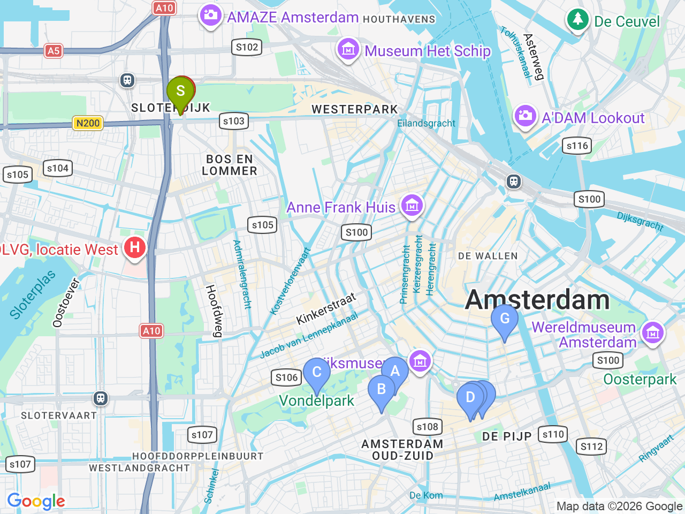

Day 05 · 2026-08-20（四）
荷蘭・阿姆斯特丹 Day 5/6
梵谷美術館 & Museum Quarter：Vondelpark・Albert Cuyp Market・Concertgebouw
上午預約時段參觀梵谷美術館，午後穿梭博物館區公園與市集，晚餐在 De Pijp 收尾

固定時間行程DAY 05
| 時間 | 地點 | 地點 (英文) | 交通方式／班次 | 價格 | 預計停留(分鐘) | 備註 |
|---|---|---|---|---|---|---|
| 梵谷美術館 | 1Van Gogh Museum, Amsterdam | 約 €27／人 | 120 | 全面預約制、不開放現場售票，務必事先線上訂好時段，旺季建議提前5-6週訂票 |
彈性探索景點DAY 05
| 地點 | 地點 (英文) | 預計停留(分鐘) | 價格 | 備註 |
|---|---|---|---|---|
| Concertgebouw | AConcertgebouw, Amsterdam | 約30分鐘 | 大廳免費 | 只安排外觀/大廳參觀，沒有訂音樂會；如臨時想聽導覽約 €17.5／人 |
| Vondelpark | BVondelpark, Amsterdam | 約45分鐘 | 阿姆斯特丹最大市民公園，適合散步放鬆 | |
| 午餐：Albert Cuyp Market | CAlbert Cuyp Market, Amsterdam | 約60分鐘 | 見上方三餐資訊 | 荷蘭最大露天市集，街頭小吃選擇多 |
| Poffertjes van de Mark | DPoffertjes Albert Cuyp, Albert Cuypstraat 161, Amsterdam | 約20分鐘 | 約 €5-7 | 市場內迷你鬆餅攤，飯後甜點 |
| Bakkerij Wolf（Utrechtsestraat 分店） | FBakkerij Wolf, Utrechtsestraat 79a, Amsterdam | 約30分鐘 | 約 €4-8 | 從市場走回市區路上順路，咖啡配三明治稍作休息 |
| 晚餐：Bazar Amsterdam | GBazar Amsterdam, Albert Cuypstraat 182, Amsterdam | 約90分鐘 | 見上方三餐資訊 | 老教堂改建的中東風味餐廳，就在 Albert Cuyp Market 街上 |
每日三餐
午餐
晚餐
Bazar AmsterdamBazar Amsterdam約 €20-30／人
📍 Albert Cuypstraat 182, Amsterdam老教堂改建的中東風味餐廳，氣氛特別，就在 Albert Cuyp Market 街上
住宿資訊
XO Hotels Park West
📍 Molenwerf 1, 1014 AG Amsterdam